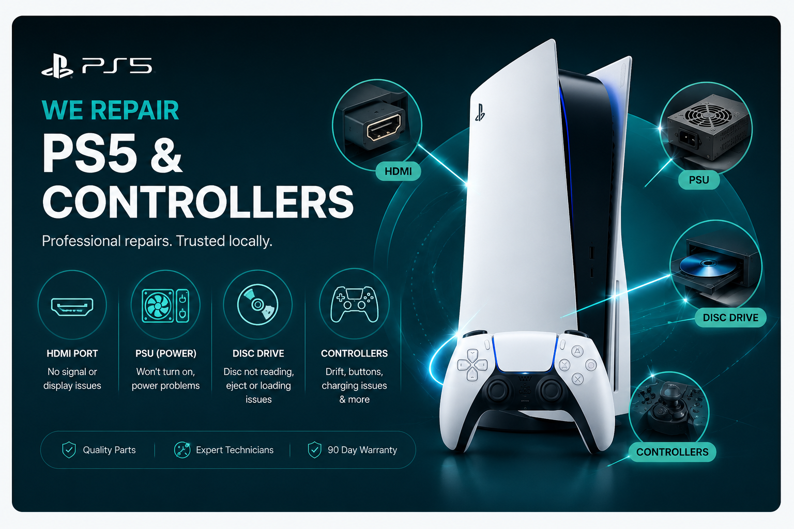

Game Console Repairs
PS5 & PlayStation Repairs Brisbane

Book professional PlayStation repairs in Brisbane for PS5 HDMI port faults, no signal, disc drive issues, power supply problems, hard drive or SSD faults, loud fan noise and overheating.
TECHM8 helps Brisbane customers with Sony PlayStation repair enquiries including PS5 HDMI port repair, no display faults, disc drive repair, power supply diagnosis, hard drive or SSD issues, fan noise, overheating, USB port faults, controller problems and general console diagnostics.
PlayStation repair services available at TECHM8
- PS5 HDMI port repair, no display, no signal, flickering image and loose HDMI connection checks.
- PlayStation disc drive repair, stuck disc removal, disc read errors, eject faults and optical drive diagnosis.
- PS5 power supply repair, no power, random shutdown, short power cycle and startup fault checks.
- PlayStation hard drive repair, SSD upgrade support, storage corruption, slow loading and boot loop checks.
- PS5 overheating repair, PlayStation fan repair, loud fan noise, dust buildup and cooling maintenance.
- USB port faults, controller faults, Wi-Fi symptoms, software errors, motherboard symptoms and general diagnostics.
PlayStation models we can assess and repair
PlayStation 5 family
PlayStation 5, PlayStation 5 (2021 revision), PlayStation 5 Slim, PlayStation 5 Pro, PS5 Digital Edition, PS5 Disc Edition, DualSense Controller and DualSense Edge.
PlayStation 4 family
PlayStation 4, PlayStation 4 Slim, PlayStation 4 Pro, DualShock 4 CUH-ZCT1 and DualShock 4 CUH-ZCT2.
Earlier PlayStation consoles
PlayStation, PSone, PlayStation Classic, PlayStation 2, PlayStation 2 Slimline, PlayStation 3, PlayStation 3 Slim and PlayStation 3 Super Slim.
Handheld and controller families
PlayStation Portal, PlayStation Vita, PlayStation Vita Slim, PSP 1000, PSP 2000, PSP 3000, PSP Go, PSP E1000, DualShock 2, DualShock 3, DualShock 4, DualSense and DualSense Edge.
Local PS5 repair support near Brisbane
Customers searching for PS5 repair near me, PS5 HDMI port repair Brisbane or PlayStation repair near me can use TECHM8 store pages for local booking and directions.
TECHM8 PlayStation repair store locations
Use these store details for local PlayStation and PS5 repair enquiries around Brisbane, Logan, Ipswich and Moreton Bay.
- TECHM8 Park Ridge, Shop 11, 3732 Mount Lindesay Hwy, Park Ridge QLD 4125, phone 0452 488 710, Google Maps.
- TECHM8 Fairfield, Shop 8, 180 Fairfield Rd, Fairfield QLD 4103, phone 0412 788 818, Google Maps.
- TECHM8 Toowong, Ground Level Shop 53, 9 Sherwood Rd, Toowong QLD 4066, phone 0485 500 099, Google Maps.
- TECHM8 North Lakes, 1114A N Lakes Drive, North Lakes QLD 4509, phone 0482 390 009, Google Maps.
- OZ Tech M8 Brassall, 68 Hunter St, Primewest Brassall Shopping Centre, Brassall QLD 4305, phone 0403 999 366, Google Maps.
PlayStation repair FAQs
Does TECHM8 repair PS5 HDMI ports?
Yes. TECHM8 can assess PS5 HDMI port repair requests including no display, flickering image, loose HDMI connection, damaged HDMI socket and related no-signal symptoms.
What PlayStation repairs does TECHM8 offer?
TECHM8 can assess PlayStation repair requests including HDMI port faults, disc drive issues, power supply problems, hard drive or SSD faults, fan noise, overheating, USB port faults, controller issues and general diagnostics.
Can TECHM8 repair PS4 and PS5 consoles?
Yes. TECHM8 can assess PS5, PS5 Slim, PS5 Pro, PS4, PS4 Slim, PS4 Pro and earlier PlayStation console models. Parts availability depends on the exact model and fault.
My PS5 has no signal. Is it always the HDMI port?
Not always. No signal can come from a damaged HDMI port, cable, TV input, display setting, HDMI line or board-level fault.
Can TECHM8 fix PlayStation overheating and loud fan problems?
Yes. A technician can check fan noise, dust buildup, overheating warnings, shutdowns during gaming, airflow problems and related cooling symptoms.
Can TECHM8 repair PlayStation disc drive faults?
Yes. TECHM8 can assess stuck discs, disc read errors, grinding noises, eject problems and disc drive symptoms on supported PlayStation models.
Can TECHM8 upgrade or replace PlayStation storage?
TECHM8 can assess hard drive, SSD and storage-related PlayStation symptoms, including boot issues, slow loading, corrupted storage warnings and storage upgrade enquiries.
Do I need to back up my PlayStation before repair?
Back up saved data where possible before any console repair, especially for storage, software, no-power or board-level diagnostics. Damaged devices always carry risk.